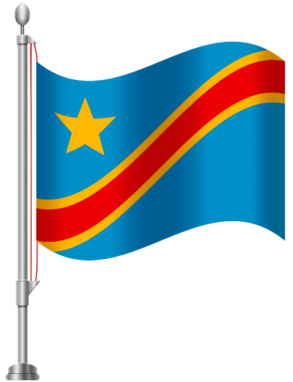

Lubumbashi, Democratic Republic of the Congo

The Democratic Republic of the Congo is a country located in Central Africa. It is the second-largest country in Africa by area and the eleventh-largest in the world. The country is known for its rich natural resources, including minerals such as cobalt and copper. The Congo River, the second-longest river in Africa, flows through the country, providing a vital waterway for transportation and trade. Despite its natural wealth, the country faces challenges such as political instability and poverty. The capital city is Kinshasa, which is also the largest city in the country.